1:идея етой роботы мне пришла когда я смотрел на банку енергетика, зделана за 4 часа
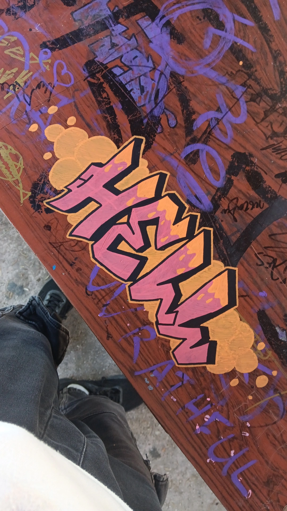2:по продолжению решил добавить и логотип на заний фон
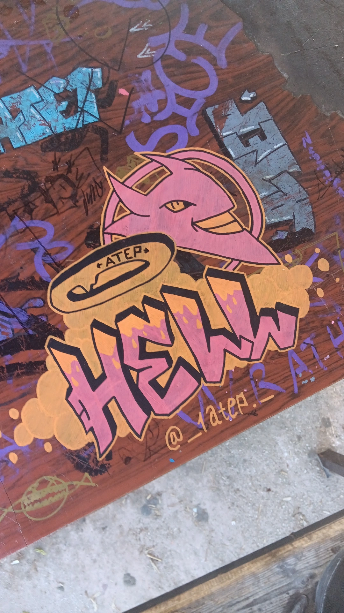3:зделав "HELL" решил почему бы и не зделать соперника "monster", робота мне понравилась есть достаточно деталей
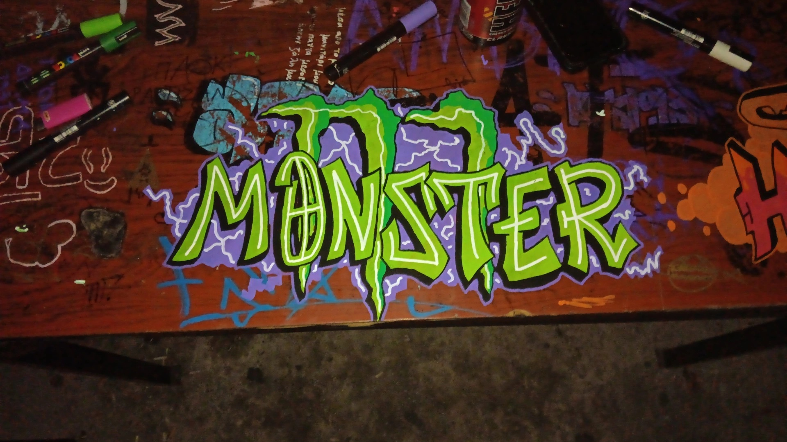4:"MONSTER" VS "HELL"
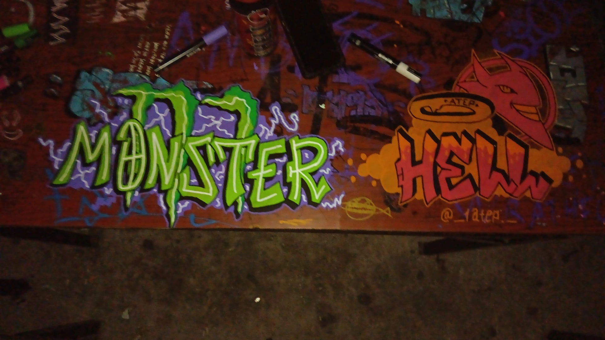5: просто и не плохо
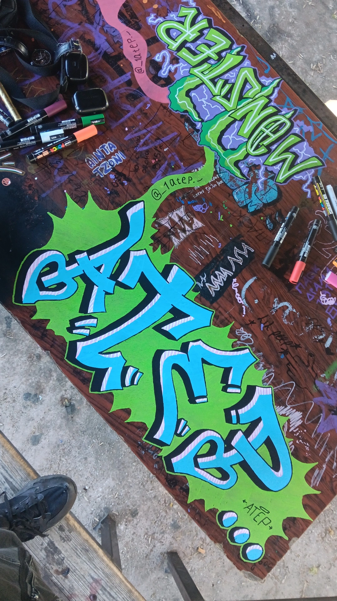6:закончился черный зделал что-то в стиле нион
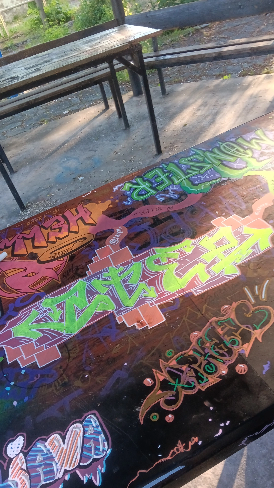7: "DAHOOD" група в которой я состаю не законечно
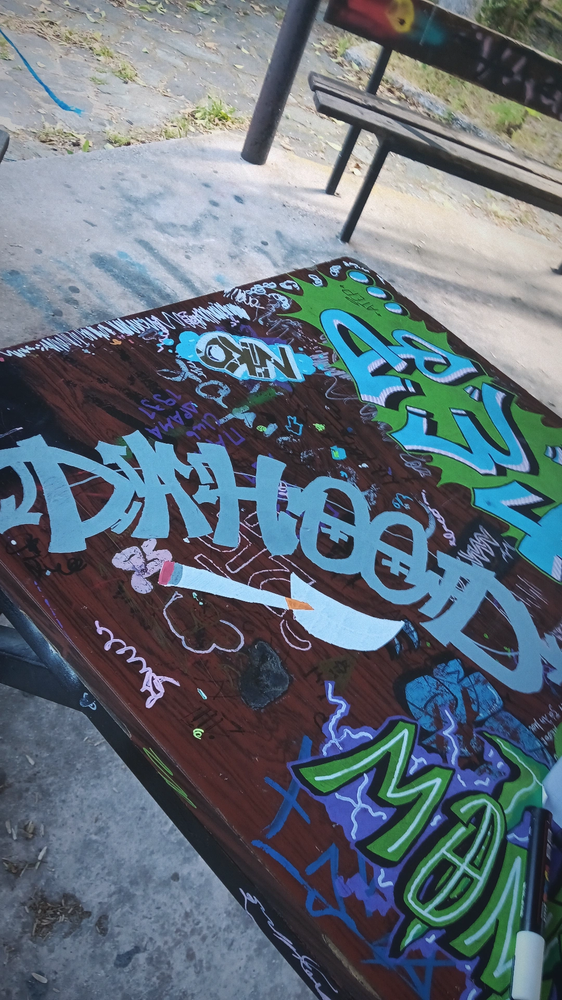7,1: купил черный маркер и закончил роботу
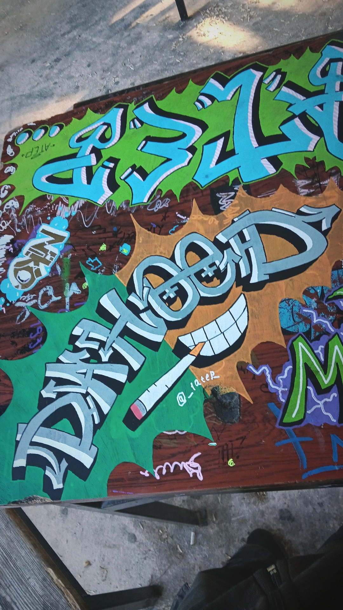7,2: половина стола почти готова
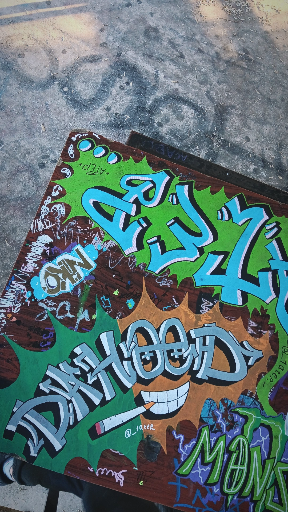7,3: половина готова, вигледит хорошо
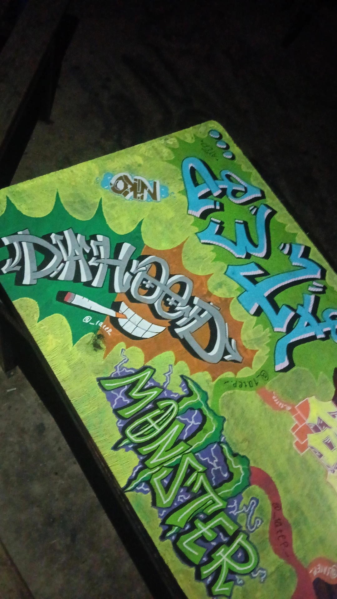8:"GAME" без обйема
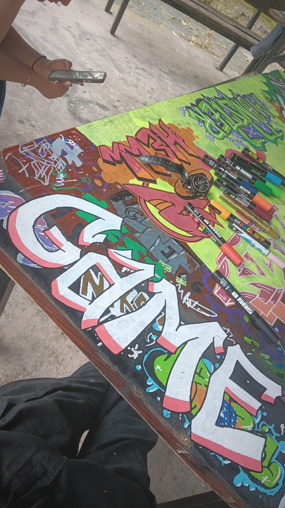8,1:законченая красивая робота
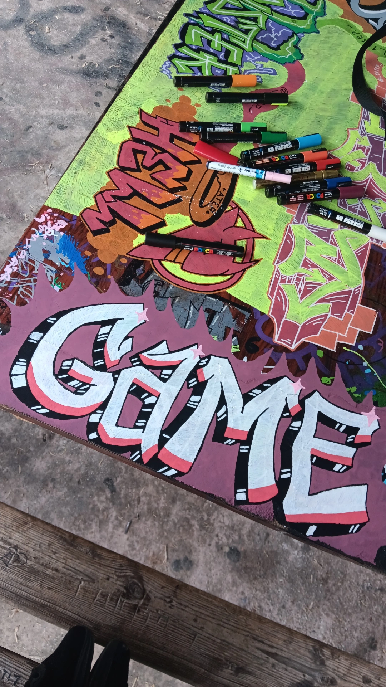9:весь проект в конце
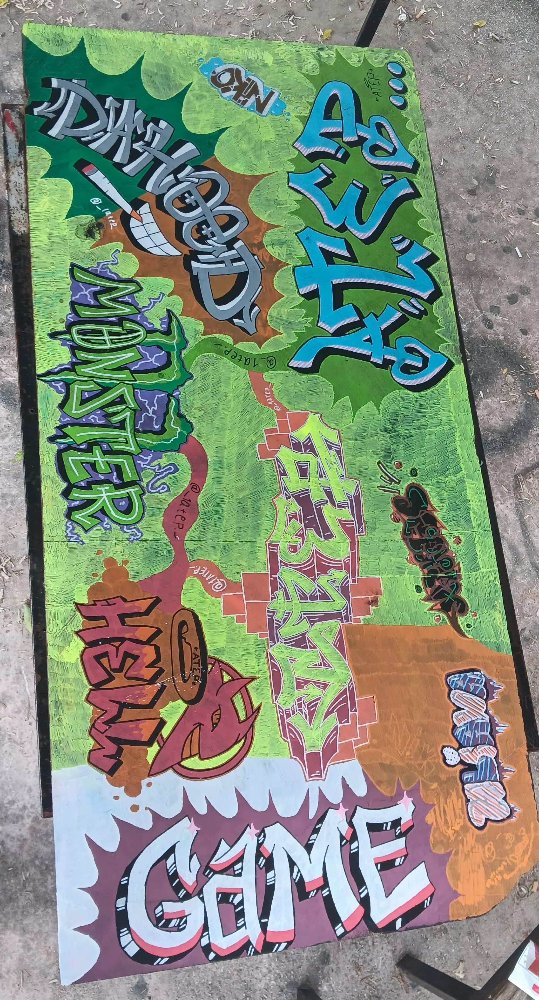